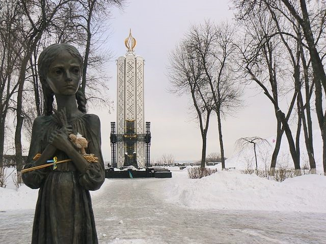
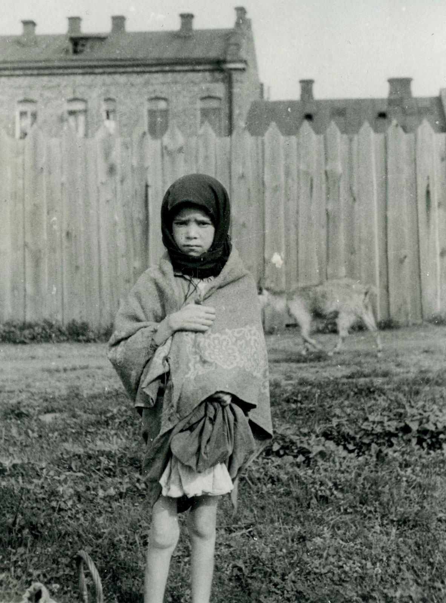

Introduction
My research question is: How does politics affect the content of history textbooks? Unlike the United States with openly-competitive textbook market, Ukraine and other post-Soviet countries are primary examples of state-controlled education systems. In these countries, the central government has a final decision on which history textbooks your child will study, what facts she will memorize, whose version of truth she will adopt. In the dissertation, I will focus on the case study of Holodomor (Great Famine) in Ukraine - how this historical event is depicted in middle and high school history textbooks that were published since the collapse of the Soviet Union in 1991.
Historical Background
The term "Holodomor means "death by starvation" and is composed of two Ukrainian words, "holod" (hunger/starvation) and "mor" (death/plague). Holodomor - "a terror-famine inflicted on the collectivized peasants of the Ukraine and the largely Ukrainian Kuban (together with the Don and Volga areas) by the methods of setting for them grain quotas far above the possible, removing every handful of food, and preventing help from the outside - even from other areas of the USSR - from reaching the starving. This action [...] was accompanied by a wide-ranging attack on all Ukrainian cultural and intellectual centers and leaders, and on the Ukrainian churches. [...] The Ukrainian peasant thus suffered in double guise - as a peasant and as a Ukrainian" (Conquest 1986:4). Despite the famine claiming lives of millions of Ukrainians, the horrific events of 1932-1933 were firstly publicly mentioned over twenty years later by various members of Ukrainian intelligentsia, sparking reports to the Communist Party of Ukraine (CPU). The period between the late 1950s and late 1980s is known as a period of Holodomor as a taboo topic in the Soviet political and academic circles. The silence on the matter among the Communist Party members was striking, taking into consideration that the leaders of the 1950-1980s Soviet Ukrainian leadership were among the survivors of the famine, and later recalled the events in their memoirs.
Outside the USSR, the Ukrainian diaspora in the West, especially in Canada and the United States, played an active role in spreading the information about Holodomor and getting public and political attention to the subject. Between the 1950s and 1980s, several publications about Holodomor were published in the West, including the research of the Ukrainian Institute at Harvard and the report of the U.S. Commission on Holodomor.
Politics of Holodomor Studies after 1991

After the collapse of the Soviet Union, the first president of independent Ukraine Leonid Kravchuk publicly stressed that Holodomor was an act of genocide. Leonid Kuchma, the second president, proclaimed the last Sunday of November as the commemoration day for the victims of Holodomor. However, the focal point for Holodomor studies was during the Yushchenko presidency (2005-2010), characterized by intensifying of academic research, public education, and commemoration of Holodomor (Andriewsky 2015:20). During the Soviet times, the access to GPU-NKVD documents related to the Famine was strictly forbidden, but these documents were declassified during the presidency of Yushchenko, becoming available for historians and other researchers in 2008 (Shapoval 2008:99). In 2006, the Parliament of Ukraine recognized Holodomor as a deliberate act of genocide. Building the Holodomor Memorial, constructing monuments as well as introducing Holodomor to school textbooks were also among the nation-building strategies introduced by Yushchenko (Motyl 2010:30-31). Thus, the Yushchenko presidency marked the beginning of mandatory Holodomor inclusion in history textbooks.
The next Ukrainian president Victor Yanukovich undermined Yushchenko's efforts to focus on the importance of remembrance, commemoration, and education about the Famine. After his inaguration, Yanukovich deleted the webpage about Holodomor from his presidential website - "a silent gesture, signifying to both the Kremlin and his own countrymen that his Ukraine, unlike Yushchenko's, would adopt pro-Soviet and pro- Russian stances" (Motyl 2010:32). After the Euromaidan revolution in 2014, Volodymyr Viatrovych, an active advocate of recognizing Holodomor as genocide, became the new head of the Institute (Andriewsky 2015:23-24). There is a possibility that in the nearest future the situation will change once again, as showman Volodymyr Zelensky won presidential elections in 2019. Zelensky's team has ties with the Yanukovich administration and Zelensky himself has ties to Russian media.
Was Holodomor a genocide?

While scholars such as Mace (1984) and Conquest (1986) were among the first to research the deliberate nature of Holodomor, others (so-called "revisionists") highly opposed this claim and deny the position that Holodomor was a deliberate act of physical extermination. Instead, they supported the position that peasants' sufferings were due to forced collectivization and industrialization (Kulchytskyi 2012:21, Motyl 2010:28). According to the 1988 U.S. Congress report by the Commission on the Ukraine Famine, Holodomor was man-made. The amounts of crops seized from the rural population intensified over time until it reached the maximum. The orders to proceed and increase extraction of the crops came from Stalin and his close circle, who were aware of the famine. Although the population of Volga Basin and the North Caucasus also were starving during that time, only ethnically Ukrainian territories of the North Caucasus had as much attention from Stalin and as many mandated actions as Ukraine. Apart from grain seizures, the communist authorities in Ukraine were also ordered by Moscow to prevent starving people from any external mobility in order to search for food. U.S. Commission also concluded that Soviet authorities were trying to "eliminate such modest national self-assertion as Ukrainians had hitherto been allowed by the USSR" (United States Commission on Ukraine Famine 1988:vi-vii).
As of May 2019, 16 countries recognize Holodomor as genocide: Australia, Canada, Colombia, Ecuador, Estonia, Georgia, Hungary, Latvia, Lithuania, Mexico, Paraguay, Peru, Poland, Portugal, Ukraine, USA. In the United States, 22 states have issued statements recognizing Holodomor as an act of genocide: Alabama, Connecticut, Illinois, Kansas, Louisiana, Massachusetts, Michigan, Minnesota, Missouri, New Jersey, New York, North Carolina, North Dakota, Ohio, Oregon, Pennsylvania, Rhode Island, Texas, Utah, Virginia, Washington, Wisconsin.
Hypotheses
- Ukrainian history textbooks published between 1991 and 2004 are more likely to omit Holodomor than mention it.
- Ukrainian history textbooks that mention Holodomor are more likely to be published after the Orange revolution (2004) in Ukraine than before the revolution.
- Ukrainian history textbooks published between 2010 and 2013 are more likely to omit Holodomor than those published before 2010.
- Ukrainian history textbooks published between 2010 and 2013 are more likely to omit Holodomor than those published after 2013.
- Ukrainian history textbooks published between 2010 and 2013 and mention Holodomor are less likely to call Holodomor a genocide.
- Ukrainian history textbooks that do not call Holodomor a genocide are more likely to be published in Eastern or Southern parts of Ukraine.
- Ukrainian history textbooks that do not mention Holodomor are more likely to be published in Eastern or Southern parts of Ukraine.
- There is a variance of narrative(s) about Holodomor in different year editions of the same history textbook written by the same author(s).